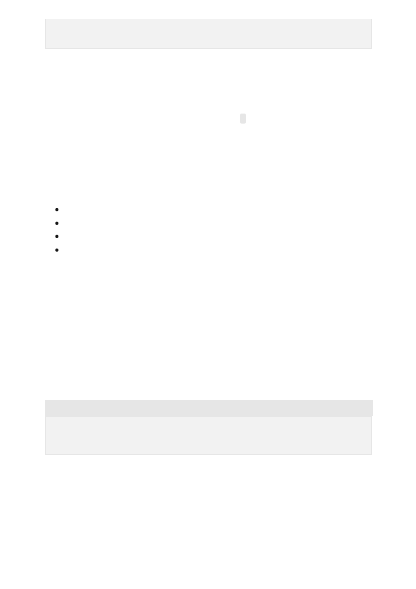

For high performance, ensure that the completions were based on the description
provided. If external content is often consulted, then adding such content in an
automated way would improve the performance. If the description is based on images,
it may help to use an algorithm to extract a textual description of the image. Since
completions are only one sentence long, we can use . as the stop sequence during
inference.
For this type of problem we recommend:
Leave the prompt empty.
No need for any separators.
You'll normally want a large number of examples, at least a few thousand.
Ensure the examples cover the intended domain or the desired tone of voice.
Many companies have a large amount of high quality content generated in a specific
voice. Ideally all generations from our API should follow that voice for the different use
cases. Here we can use the trick of leaving the prompt empty, and feeding in all the
documents which are good examples of the company voice. A fine-tuned model can be
used to solve many different use cases with similar prompts to the ones used for base
models, but the outputs are going to follow the company voice much more closely than
previously.
JSON
A similar technique could be used for creating a virtual character with a particular
personality, style of speech and topics the character talks about.
Generative tasks have a potential to leak training data when requesting completions
from the model, so extra care needs to be taken that this is addressed appropriately. For
example personal or sensitive company information should be replaced by generic
information or not be included into fine-tuning in the first place.
to your look, without costing you a fortune."
}
Open ended generation
Case study: Maintaining company voice
{"prompt":"", "completion":" <company voice textual content>"}
{"prompt":"", "completion":" <company voice textual content2>"}